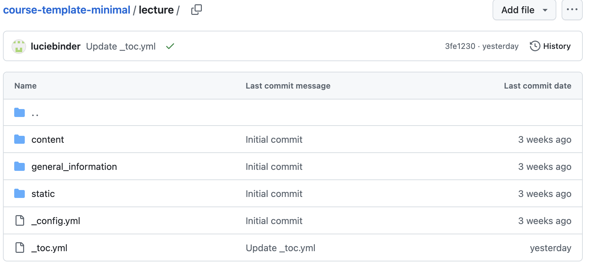
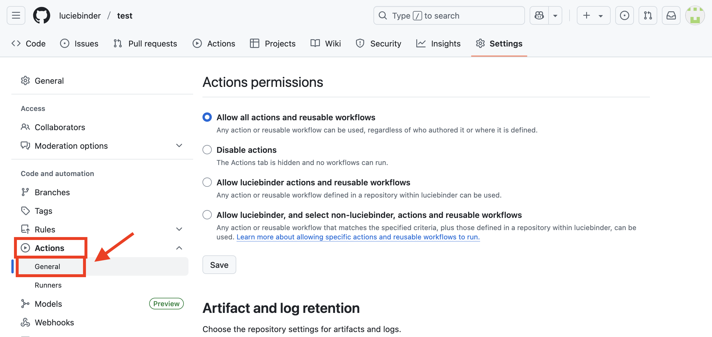
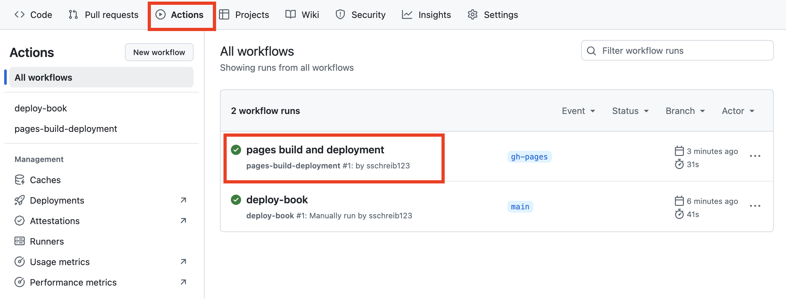
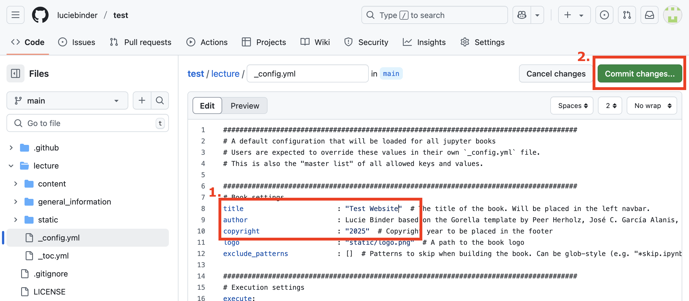

Quick Setup Guide#
Okay, now let’s get started! With your own course concept in mind, you will learn now how to create and host your Jupyter Book course website.
If you have any questions, feel free to click on the section titels to dive into the detailed tutorials or get in touch with me!
1. Set up your GitHub account#
If you haven’t already set up your GitHub account, please go to the respective section.
2. Copy our course template#
Let’s copy our ready-to-go course template! It’s the quickest way to get started — simply customize and add your own pages to fit your content, without worrying about setting up a project from scratch.
1. Go to the GitHub page of our course template and click on “fork”.
2. Give your course a name and a description, check the box “Copy the main branch only,” and click the “Create fork” button.
3. Getting familiar with the course template#
Let’s take a look at the structure of the course template:
Some files can be ignored, as they contain technical information for hosting the website. The majority of what you’ll be modifying is located in the “lecture” content folder, which looks like this:

In this folder, you can add your content by editing or creating Markdown files. But before we look at how to edit them, let’s set up your website first. By adjusting a few settings, GitHub Pages can host your website and automatically update it whenever you make changes.
4. Host your course website#
1. At the top of your repository, click on “Actions”. Then, click on the green button that says “I understand my workflows, go ahead and enable them” to enable workflows.
Note
What is a workflow? A workflow in GitHub is an automated process that runs a series of steps in response to specific events in your repository, like pushing a file, editing content, or publishing your site. In our case, it’s what builds your Jupyter Book (“deploy-book”) and publishes it as a website using GitHub Pages (“pages build and deployment”).
2. Now, click on “deploy-book” on the left side.
3. Click on the button “Run workflow” located on the right-hand side and then again on “Run workflow” (green button).
4. Now, the workflow is running. Once the green checkmark appears, the process has completed successfully.
5. Click on “Settings” on the top of your repository.
6. On the left side, click on “Pages”.
7. Under Source, make sure that “Deploy from a branch” is selected.
8. Under Branch: Select branch “gh-pages”. The folder “/root” is automatically selected.
This should look like this now. Don’t forget to click on save.
9. On the left side, click on “Action” and then “General”.

10. At the bottom of the page, under “Workflow permissions,” select the option “Read and write permissions” and allow Github Actions to create and approve pull requests. Then, click on save.
11. Click on “Actions” again at the top of your repository. You should see a workflow named “pages build and deployment” with a green checkmark. If you see a yellow circle instead, the process is still running; just wait a moment or refresh the page until the checkmark turns green.

Once the process is finished, GitHub has successfully built your website. Let’s check it out!
12. Go back to “Settings”, and then “Pages”. On the top of this page, you should now see a link that looks like this:
This is the link to your newly built website! Congratulations!
When you open it, you should see the welcome page to your website. On the left side, you can find the table of content. Now it’s your turn to fill the pages!

5. Edit and create files#
5.1 Edit your first file: the config file#
Let’s edit your first file, the _config.yml file! Here, you’ll update the course title, authors’ names, affiliations, and other key details to make the template your own.
1. First, click on “Code” to get to your file structure.
2. To edit a file, click on the specific file (here: _config.yml, which is located in the lecture folder).
2. Click the edit button, represented by a small pencil in the upper right corner.
3. Replace the existing information with your course title, your name, affiliation, and any other relevant details. Once you’re finished, click “Commit changes…”.

4. For transparency and version control, provide a brief message describing the changes you made.
As soon as you click on “Commit changes”, your changes will be saved.
Awesome! You’ve just added your first personal touch!
5.2 The README file#
Now let’s add some text to another important file, the README file, a file that entails some main information on your course.
1. Click on “Code” to get to your file structure. Then, click on the README file.
2. Click on the “edit” symbol:
3. Enter some text and click “Commit changes” when you’re done.
Tip
You might want to include the link to your website to your README file to make it easily accessible.
4. Add some descriptions about your changes and comiit the changes:
Tip
Remember to update your README as soon as you filled your website with content.
5.3 Create a new file#
1. Again, click on “Code” and navigate to the folder where you’d like to add the new file (here: lecture/content). Then, click on “Add file” in the upper-right corner and select “Create new file.”
2. Give your file a name (here: “writing”) and specify the file type, such as “.md” to create a Markdown file.
Now you’re ready to add your content and format it using Markdown! For details on how to format content with markdown, go to Formatting Content With Markdown.
6. Update Table of Contents#
Once you’ve created new files, you’ll need to add them to your table of contents so they appear on your website.
1. Open the file _toc.yml and click on the edit button on the right-hand side.
The list of file names (including their paths) in this file defines the structure and content of your website’s navigation:
2. Add the path to your newly created file within the structure of the table of contents. All paths must be specified relative to the _toc.yml file, which is located in the lecture folder.
In the example below, the file is added as a subsection (listed under “sections”) of the chapter “intro-content”:
For a detailed explanation of how to structure your table of contents file, see: Organizing Content With the Table of Contents.
Congratulations!
You’ve created your first course website and added a new file to your table of contents! Now, you can focus on designing a beautiful and engaging site to enrich your teaching and your students’ learning experience.
To explore what’s possible and learn how to further enhance your content, for example, through formatting or by including multimedia, check out the detailed guide here: Formatting Content With Markdown
For those of you interested in integrating live R code, check out the following resources:
Our tutorial on how to integrate MyBinder: Making Your Book Truly Interactive
Integrating the RStudie user interface via MyBinder: https://mybinder.readthedocs.io/en/latest/howto/user_interface.html#rstudio
Choose R as the default language in MyBinder: https://mybinder.readthedocs.io/en/latest/howto/languages.html#the-r-language